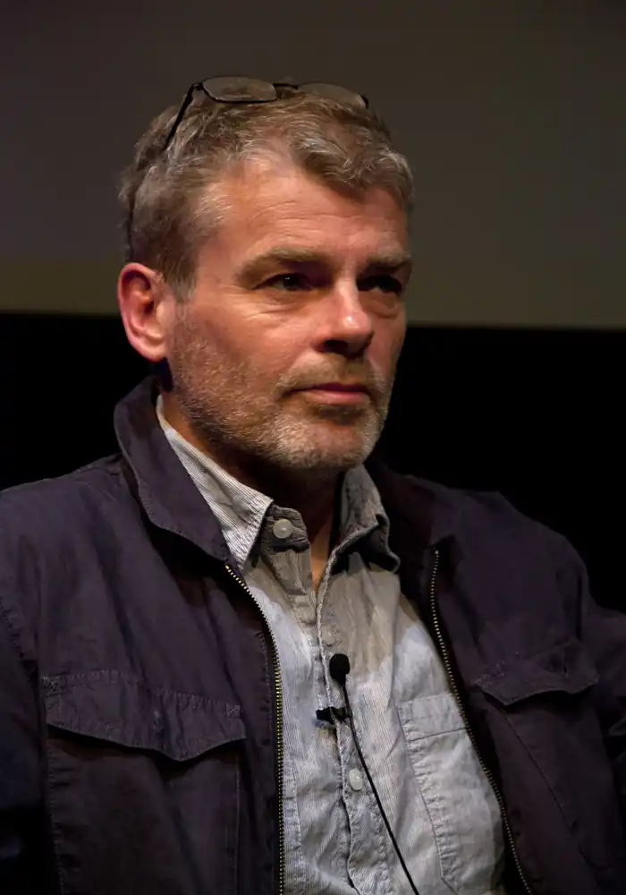

Марк Геддон (народився 28 жовтня 1962 року) — англійський письменник, художник, сценарист, володар Уітбредовской премії за книгу "Загадковий нічний інцидент із собакою". Народився в місті Нортгемптон, навчався в Оксфордському університеті, де в 1981 році отримав ступінь бакалавра мистецтв з англійської мови та літератури. У 1984 році захистив магістерську дисертацію в Единбурзькому університеті.
За своє життя Геддон змінив декілька професій: деякий час працював в театральній касі, розвозив пошту. Після захисту магістерської дисертації почав займатися ілюструванням різноманітних видань, зокрема дитячих книжок. Незабаром Геддон сам починає письменницьку діяльність. У 1987 році вийшла його перша дитяча книжка Gilbert's Gobstopper. Сьогодні автор написав десятки дитячих творів, серед яких Toni and the Tomato Soup (1988), Titch Johnson, Almost World Champion (1993), Agent Z and the Killer Bananas (2001) та інші.
В молодості Марку Геддону довелося працювати з людьми, хворими на аутизм, і людьми з обмеженими можливостями. Цей досвід підштовхнув його до написання у 2003 році першої книги для дорослих "Загадковий нічний інцидент із собакою", в якій розповідь ведеться від імені хлопчика-аутиста. Цікавий факт: ця книга була задумана автором як роман для дорослих, проте у видавництві вона була прийнята за зразок дитячої літератури. Книга "Загадковий нічний інцидент із собакою" у 2004 році у Великобританії стала переможцем в номінації "Найкращий роман" і "Книга року", була відзначена спеціальним призом премії Commonwealth Writers' Prize в номінації "Найкраща перша книга". Завдяки цьому твору Марк Геддон у 2004 році увійшов до десятки найкращих підліткових авторів — переможців премії Alex Awards.